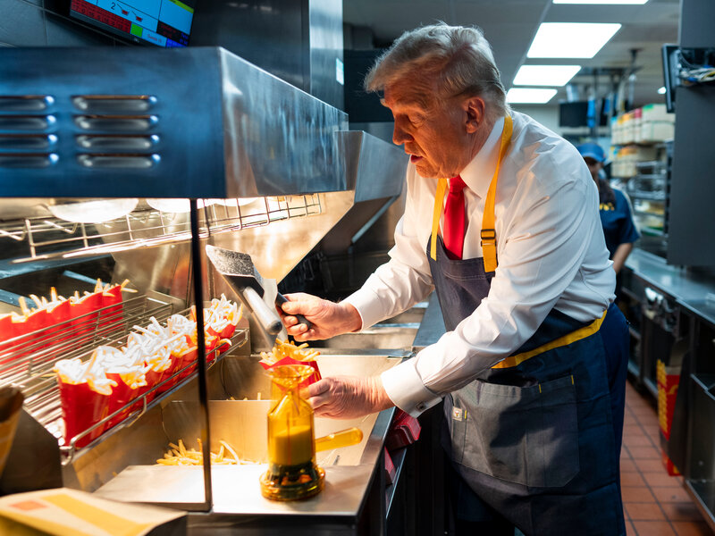

We will be comparing the pros and the cons for the food of Macdonalds to determine if istherg good or bad.
| Pros | Cons |
|---|---|
| Cheap food | High on calories |
| Made on the spot | Made from frozen food |
| Served quickly (minimalwait time) | Consuming large quantities |
|
|
|  | |